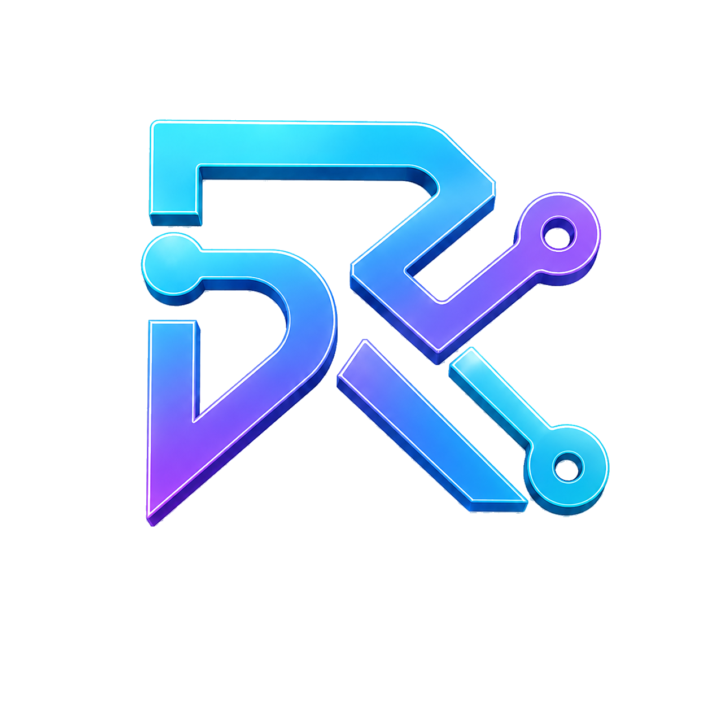

Runtime signals
A small schema for observable warnings and limits.

RBX LabsRBX Labs · Open community in formation
Turn silent AI failures into reusable evidence, tests, and repairs.
ARC is a shared place for developers and maintainers to preserve what went wrong, reproduce it safely, define the expected behavior, and share the repair with the next project.
THE RELIABILITY LOOP
failure → evidence → fixture → test → repair
Why ARC
AI systems can produce plausible answers while relying on weak evidence, exceeding their authority, or reporting success when the intended outcome never occurred.
When those failures stay private, the learning disappears with them. ARC makes the useful parts shareable: a redacted trace, a minimal fixture, an expected safe outcome, a regression test, and the repair—or the unresolved limitation.
ARC v0.1
A small schema for observable warnings and limits.
A standard format for safely reproducing an AI failure.
A plain check for whether expected behavior holds.
Guidance for redaction, disclosure, and unresolved risk.
The first reference implementation
RBX Labs is contributing the initial kit: bounded authority, observable evidence, proceed/abstain/review outcomes, separate human disposition and execution effect, and replayable traces that can become tests.
A clear boundary
The invitation
Help turn it into a test that the next project does not have to rediscover.
JOIN ARCrbx-labs.io/arc